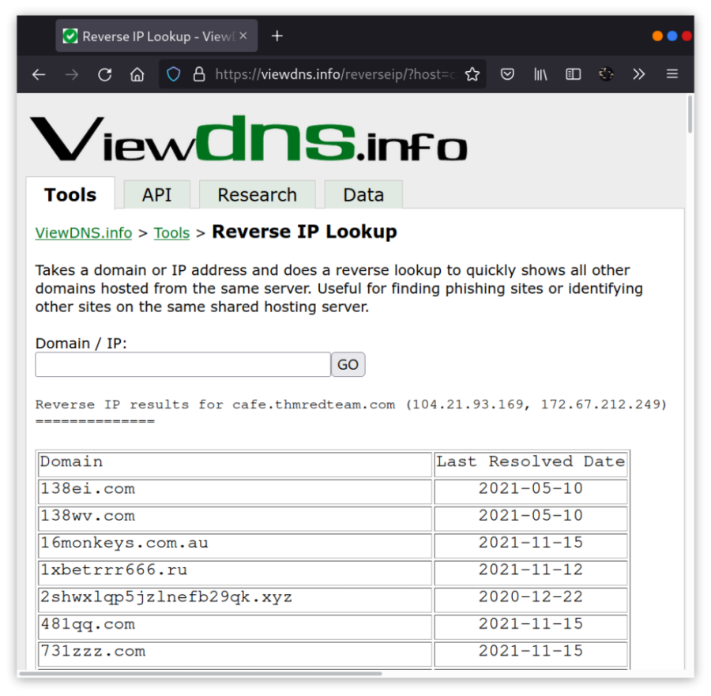
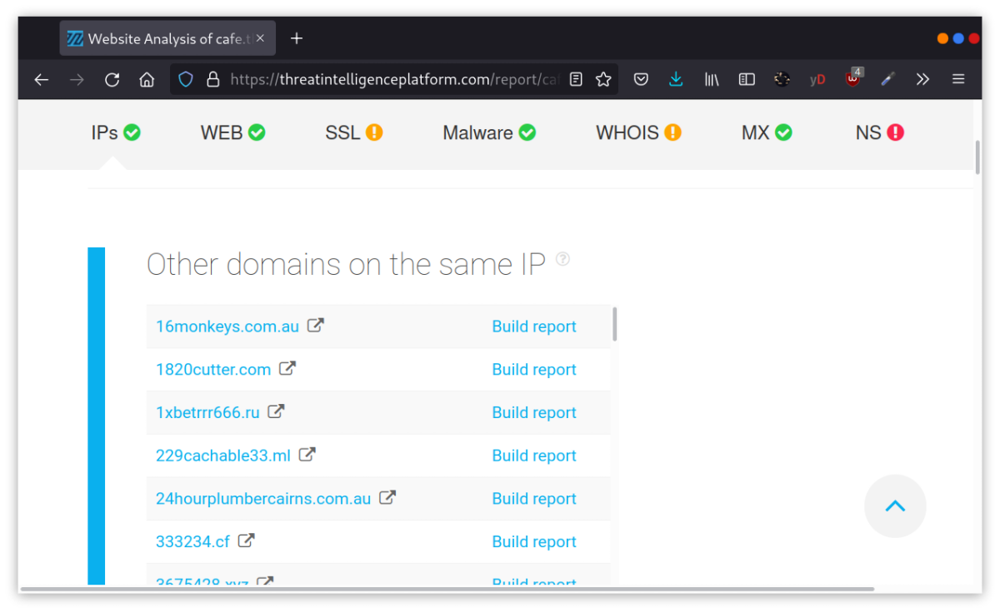
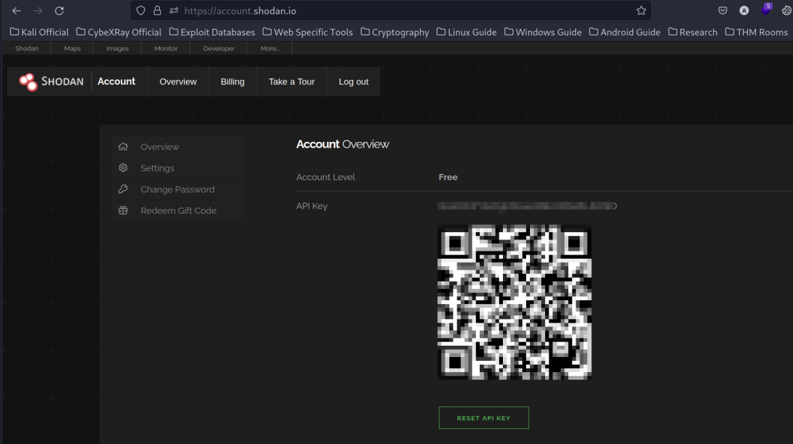

Specialized Search Engines
WHOIS and DNS Related
Beyond the standard WHOIS and DNS query tools that we covered in Task 3, there are third parties that offer paid services for historical WHOIS data. One example is WHOIS history, which provides a history of WHOIS data and can come in handy if the domain registrant didn’t use WHOIS privacy when they registered the domain.
There are a handful of websites that offer advanced DNS services that are free to use. Some of these websites offer rich functionality and could have a complete room dedicated to exploring one domain. For now, we'll focus on key DNS related aspects. We will consider the following:
• VidewDNS.info
• Threat Intelligence Platform
Link: https://viewdns.info/
Link: https://threatintelligenceplatform.com/
ViewDNS.info
ViewDNS.info offers Reverse IP Lookup. Initially, each web server would use one or more IP addresses; however, today, it is common to come across shared hosting servers. With shared hosting, one IP address is shared among many different web servers with different domain names. With reverse IP lookup, starting from a domain name or an IP address, you can find the other domain names using a specific IP address(es).
In the figure below, we used reverse IP lookup to find other servers sharing the same IP addresses used by cafe.thmredteam.com. Therefore, it is important to note that knowing the IP address does not necessarily lead to a single website.

Threat Intelligence Platform
Threat Intelligence Platform requires you to provide a domain name or an IP address, and it will launch a series of tests from malware checks to WHOIS and DNS queries. The WHOIS and DNS results are similar to the results we would get using whois and dig, but Threat Intelligence Platform presents them in a more readable and visually appealing way. There is extra information that we get with our report. For instance, after we look up thmredteam.com, we see that Name Server (NS) records were resolved to their respective IPv4 and IPv6 addresses, as shown in the figure below.
On the other hand, when we searched for cafe.thmredteam.com, we could also get a list of other domains on the same IP address. The result we see in the figure below is similar to the results we obtained using VidewDNS.info.

Specialized Search Engines
Censys
Censys Search can provide a lot of information about IP addresses and domains. In this example, we look up one of the IP addresses that cafe.thmredteam.com resolves to. We can easily infer that the IP address we looked up belongs to Cloudflare. We can see information related to ports 80 and 443, among others; however, it's clear that this IP address is used to server websites other than cafe.thmredteam.com. In other words, this IP address belongs to a company other than our client, Organic Cafe. It's critical to make this distinction so that we don’t probe systems outside the scope of our contract.
Link: https://search.censys.io/
Shodan
You might remember using Shodan in the Passive Reconnaissance room. In this section, we will demonstrate how to use Shodan from the command line.
To use Shodan from the command-line properly, you need to create an account with Shodan, then configure shodan to use your API key using the command, shodan init API_KEY.
You can use different filters depending on the type of your Shodan account. To learn more about what you can do with shodan, we suggest that you check out Shodan CLI. Let’s demonstrate a simple example of looking up information about one of the IP addresses we got from nslookup cafe.thmredteam.com. Using shodan host IP_ADDRESS, we can get the geographical location of the IP address and the open ports, as shown below.
Link: https://www.shodan.io/
Link: https://cli.shodan.io/
Eg. To Get My Public IP Address: shodan myip
First Register & go to accounts

Use to above API Key to initialize sodan in your terminal.